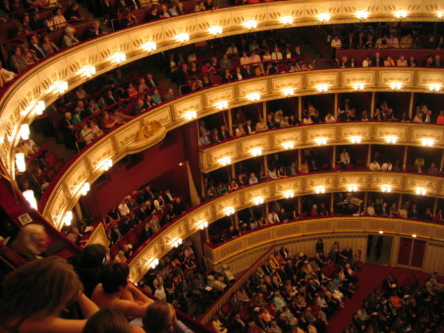

КУЛЬТУРА
СВЯЩЕНОЇ РИМСЬКОЇ ІМПЕРІЇ
Музика
Відень, столицю Австрії можна вважати найважливішим центром музичних інновацій. Композитори 18 та 19 століть приїжджали до міста під заступництвом Габсбургів, і робили Відень столицею Європейської класичної музики. Вольфганг Амадей Моцарт, Людвіг ван Бетховен та Йоганн Штраус-молодший, зокрема, були пов'язані з містом. В епоху бароко, слов'янські та угорські форми народна музика впливала на австрійську. Статус Відня почав її зростання, як культурного центру на початку XVI століття, і був зосереджений навколо інструментів, включаючи лютню.

Віденська державна опера.
Література
Австрійську літературу можна розділити на два основні підрозділи, а саме період до середини 20 століття, і наступний період, після того, як Австро-Угорська та Німецька Імперії вже розпочали своє існування. Австрія перетворилася з великої європейської держави на маленьку державу. Крім того, є багато літератури, яку деякі вважатимуть австрійською, але вона не була написана в Німеччині.
Доповнюючи свій статус землі художників, Австрія завжди була країною великих поетів, письменників та новелістів. Вона була домом для таких письменників і поетів як Артур Шніцлер, Стефан Цвейг, Томас Бернхард, і Роберт Музіль, Георг Тракль, Франц Верфел, Франц Грільпарцер, Райнер Марія Рільке, і Адальберт Штіфтер і батьківщиною відомих сучасних австрійських драматургів та письменників включаючи Эльфриду Елінек і Петера Хандке.